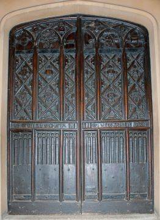

A close inspection of the outer walls at Towneley reveals numerous blocked -up doorways, which indicate the many changes that have been made in the past. Inside there are many similar changes, some created in recent times to improve the access for museum visitors.
There are a number of examples of doors and doorways being re-used. The doorway in the base of the Victorian tower was originally added to the North wing by William Towneley (1714-1742) sometime after 1736.

The entrance doors to the Great Hall came from Standish Hall sometime early in the 19th century. The door is carved in the gothic style and bears an inscription "R et AHSOISTA / TW FEC A DNI MdXXX" which can be read "Ralph and Alis Standish. TW made this door 1530".
The door of greatest interest within the house is the beautiful panelled oak door to the chapel with its carved panels of strap-work, fruit and foliage, bears the initials of John Towneley and his wife and cousin, Mary Towneley, who married in 1556. Elsewhere in the North wing many of the lesser rooms have 17th century oak doors and cocks-head hinges.